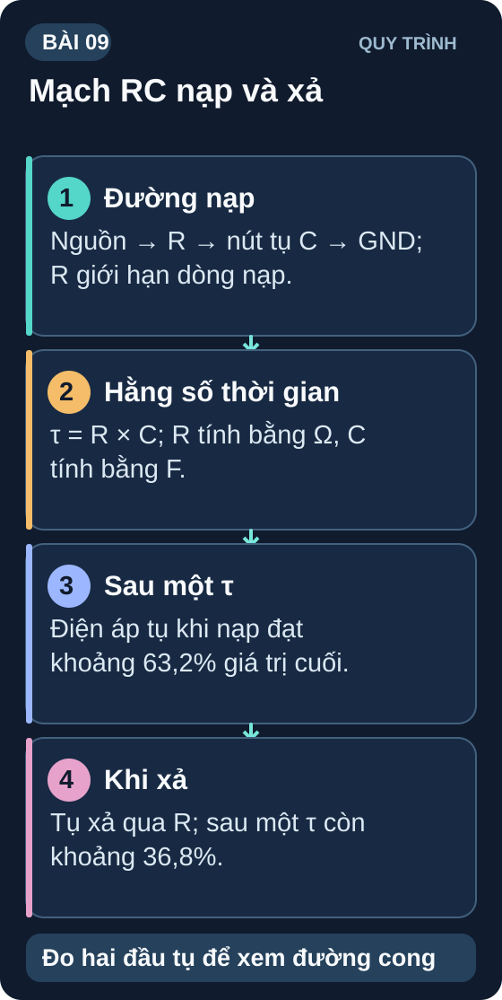
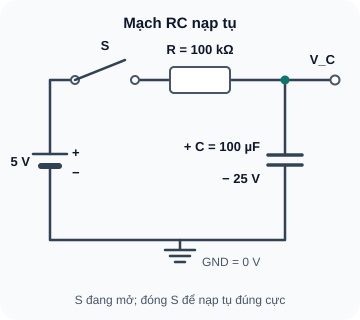

Mạch RC — Nạp & Xả Tụ Điện
Hằng số thời gian τ, đường cong nạp/xả và ứng dụng thực tế: debounce, delay, lọc tín hiệu.
- Hiểu mạch RC là gì và cách dòng/áp thay đổi theo thời gian
- Tính hằng số thời gian τ (tau) = R × C
- Đọc và hiểu đường cong nạp/xả tụ hàm mũ
- Tính điện áp tụ tại thời điểm bất kỳ: V(t) = V_f × (1 – e^(–t/τ))
- Biết quy tắc 5τ: sau 5τ coi như nạp/xả hoàn toàn
- Quan sát nạp/xả tụ thực tế bằng multimeter
- Ứng dụng RC: bộ lọc thông thấp (Low-Pass Filter) cơ bản
- Hiểu tần số cắt (cutoff frequency) của RC filter

Dụng cụ
| Tên | Thông số | SL |
|---|---|---|
| Điện trở 100 kΩ | ¼W | 1 |
| Điện trở 10 kΩ | ¼W | 2 |
| Tụ hóa 100µF/25V | Electrolytic, phân cực | 1 |
| Tụ gốm 100nF | Ceramic "104" | 2 |
| Nguồn 5V + công tắc hoặc dây jumper để đóng/ngắt | — | 1 bộ |
| Breadboard | — | 1 |
| Multimeter | DCV | 1 |
1. Mạch RC — Tại sao tụ không nạp tức thì?
Khi đặt điện áp vào tụ điện qua một điện trở, tụ không nạp điện ngay lập tức đến điện áp nguồn. Thay vào đó, điện áp trên tụ tăng dần theo dạng hàm mũ. Lý do: ban đầu tụ chưa có điện tích nên dòng nạp lớn, nhưng khi tụ dần tích điện, điện áp ngược của tụ làm giảm dòng nạp → quá trình chậm lại.

Đọc mô tả D09-1
Nguồn 5 V qua công tắc S đang mở và R 100 kΩ đến nút V_C; đóng S tại t=0 để bắt đầu nạp. Tụ hóa 100 µF/25 V có cực dương tại V_C, cực âm tại GND; đo V_C so với GND.
2. Hằng số thời gian τ (Tau)
Hằng số thời gian τ (đọc là "tau") là thước đo tốc độ nạp/xả của mạch RC. Nó cho biết sau bao lâu tụ nạp được ~63,2% điện áp cuối cùng.
Ví dụ tính toán 1 — Tính τ
R = 100 kΩ = 100,000 Ω; C = 100 µF = 0,0001 F
τ = 100,000 × 0,0001 = 10 giây
→ Sau 10 giây, tụ nạp được 63,2% của 5V = 3,16V. Bạn có thể đo và xác nhận điều này!
2.1 Quy tắc 5τ — Khi nào coi tụ đã nạp/xả xong?
| Thời gian | % điện áp nạp | V_C (từ 0V → 5V) | Trạng thái |
|---|---|---|---|
| t = 0 | 0% | 0V | Bắt đầu nạp |
| t = 1τ | 63,2% | 3,16V | Nạp 63% |
| t = 2τ | 86,5% | 4,33V | — |
| t = 3τ | 95,0% | 4,75V | Thực tế coi là "xong" trong nhiều ứng dụng |
| t = 4τ | 98,2% | 4,91V | — |
| t = 5τ | 99,3% | 4,97V | Coi là nạp hoàn toàn (≈100%) |
Ví dụ tính toán 2 — Điện áp tụ sau 15 giây
τ = 10s, V_final = 5V, t = 15s (= 1,5τ)
V_C = 5 × (1 – e^(–15/10)) = 5 × (1 – e^(–1,5)) = 5 × (1 – 0,223) = 5 × 0,777 = 3,88V
3. RC Low-Pass Filter — Lọc thông thấp
Khi đặt tín hiệu AC vào mạch RC và lấy điện áp đầu ra tại tụ C (thay vì R), ta được một bộ lọc thông thấp (Low-Pass Filter). Tín hiệu tần số thấp "qua được" (V_out ≈ V_in), nhưng tín hiệu tần số cao bị suy giảm (tụ ngắn mạch tần số cao → V_out nhỏ).
Ví dụ tính toán 3 — Tần số cắt của RC filter
R = 10 kΩ, C = 100 nF:
f_c = 1 / (2π × 10000 × 0,0000001) = 1 / (2π × 0,001) = 1 / 0,00628 = 159 Hz
→ Filter này cho phép âm thanh tần số thấp < 159 Hz đi qua (bass), lọc bỏ tần số cao.
- Debounce phím nhấn: R=10kΩ, C=100nF → f_c=159Hz → lọc nhiễu bounce tần số kHz
- Lọc nhiễu trước ADC: R=1kΩ, C=100nF → f_c≈1,6kHz; suy giảm nhiễu có tần số cao hơn nhiều so với 1,6kHz. Mạch này hầu như không lọc thành phần 50/100Hz; chọn f_c thấp hơn nếu cần lọc chúng và vẫn phải giữ đủ băng thông tín hiệu.
- Lọc âm thanh: R=10kΩ, C=1µF → f_c=15,9Hz → chỉ cho bass qua
- Delay timer: R=100kΩ, C=100µF → τ=10s → delay bật đèn
4. Thực hành: Quan sát nạp/xả tụ bằng multimeter
Ngắt nguồn rồi lắp mạch: 5V → S → R(100kΩ) → V_C; tụ hóa 100µF/25V từ V_C (cực +) xuống GND (cực −). Kiểm vạch cực âm trên tụ trước khi cấp nguồn. Đặt multimeter ở chế độ DCV đo hai đầu tụ.
Dùng dây jumper làm công tắc: cắm để đóng mạch (t=0). Bắt đầu bấm giờ trên điện thoại.
Ghi điện áp tụ (V_C) tại t = 0, 5, 10, 15, 20, 30, 50 giây. Kỳ vọng τ = 10s.
Sau khi tụ nạp đầy (~50s), ngắt nguồn và nối tụ qua R (100kΩ). Quan sát tụ xả dần về 0V.
So sánh V_C đo được tại t=10s với lý thuyết: V(τ) = 5 × 63,2% = 3,16V.
| Thời gian (s) | V_C lý thuyết (V) | V_C đo được (V) | Sai lệch (%) |
|---|---|---|---|
| 0 | 0 | _____ | — |
| 5 | 1,97 | _____ | _____ |
| 10 (=1τ) | 3,16 | _____ | _____ |
| 20 (=2τ) | 4,32 | _____ | _____ |
| 30 (=3τ) | 4,75 | _____ | _____ |
| 50 (=5τ) | 4,97 | _____ | _____ |
1: τ = 47000 × 0.00001 = 0,47s. Nạp đầy: 5τ = 2,35 giây
2: t=2τ → V = V_f × (1–e^−2) = V_f × 0,865 = 86,5%. Với 3,3V: V_C = 3,3 × 0,865 = 2,855V
3: R = 1/(2π × f_c × C) = 1/(2π × 50 × 0,000001) = 1/0,000314 = 3,183 Ω ≈ 3,3 kΩ (chọn 3,3kΩ E24)
4: τ = 10000 × 0,00001 = 0,1s = 100ms. t=100ms = 1τ. V_C = 5 × e^(−1) = 5 × 0,368 = 1,84V
5: 5τ = 3s → τ = 0,6s. R = τ/C = 0,6/0,0001 = 6000Ω = 6kΩ. Chọn R=5,6kΩ hoặc 6,8kΩ (E24).